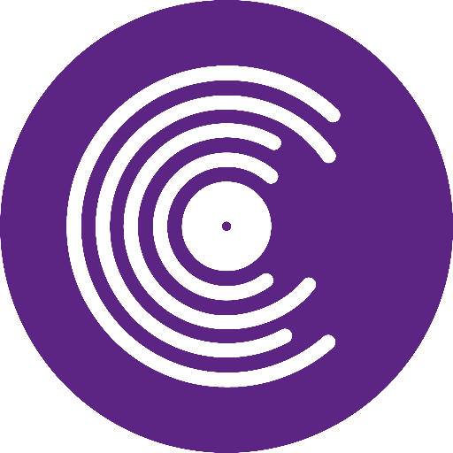

Repository of Irish Dialects canuint.ie Dictionary and Language Library teanglann.ie Terminologue Open-source terminology management system terminologue.org Lexonomy Open-source dictionary writing system lexonomy.eu Foclóir Mháirtín Uí Chadhain focloiruichadhain.ria.ie Native Dialogs Practise languages with virtual humans nativedialogs.com Pota Focal Independent Irish dictionary potafocal.com